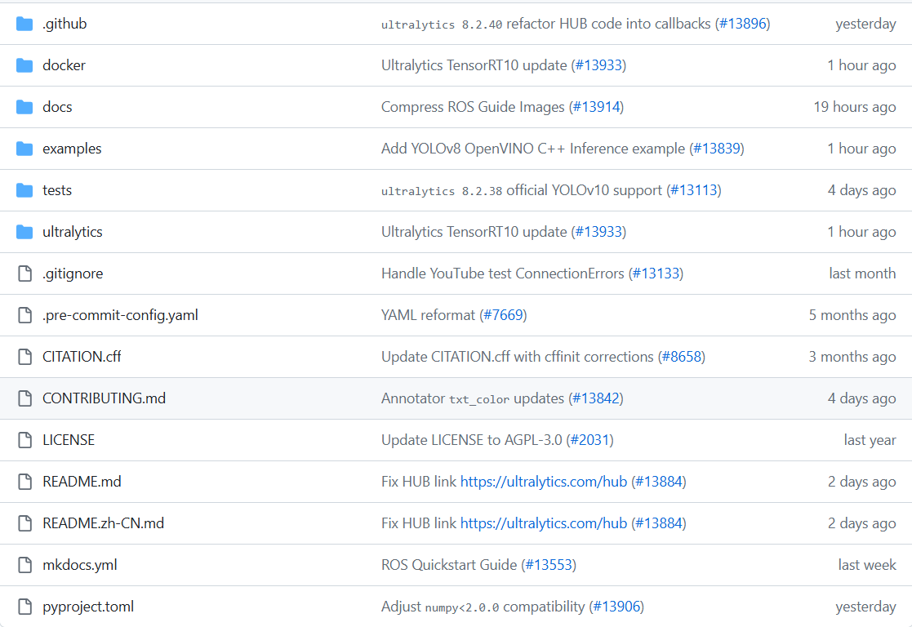
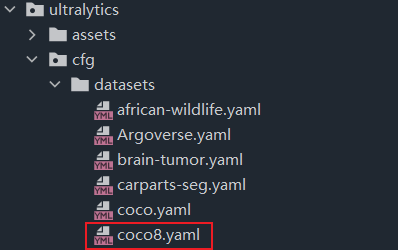
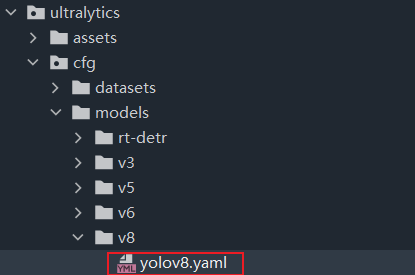
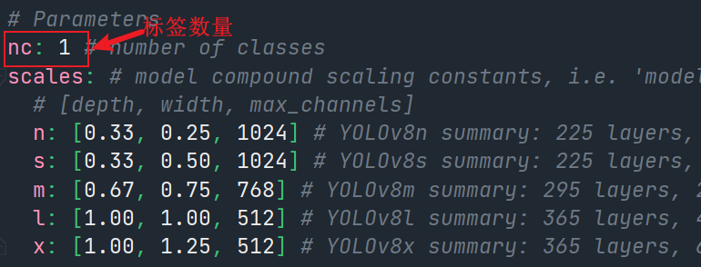
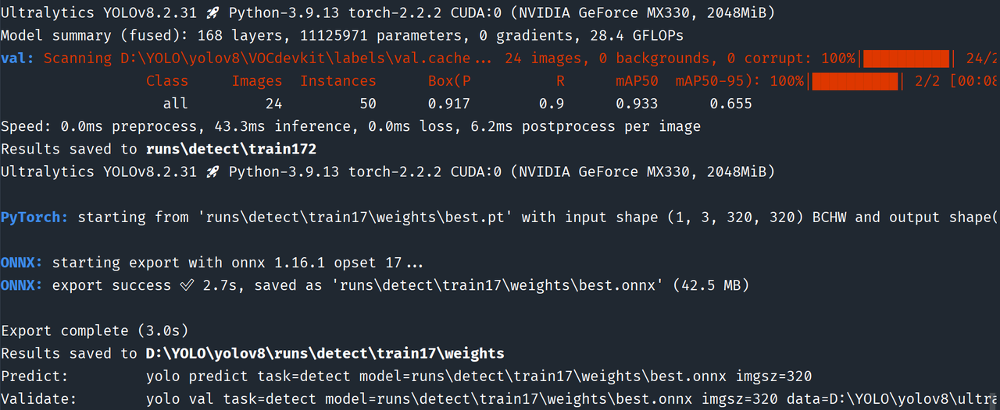
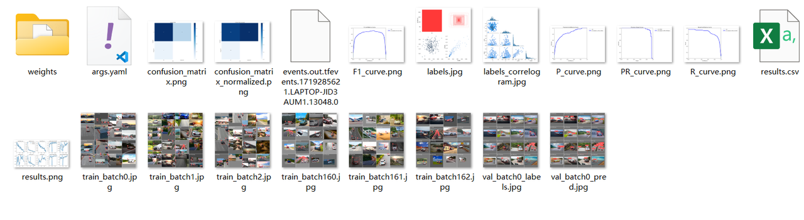
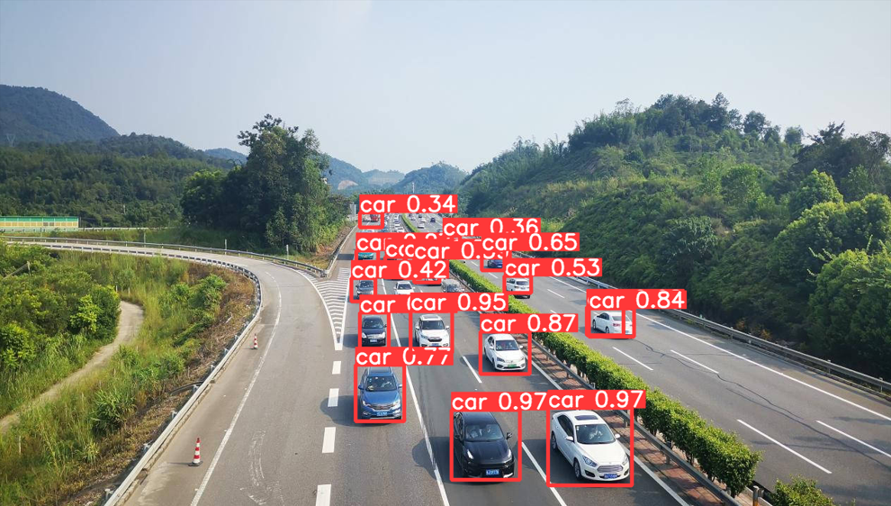
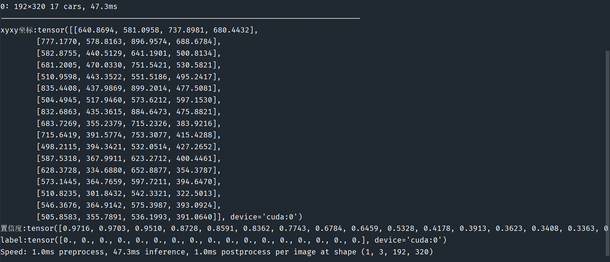

模型训练
YOLOV8模型训练¶
YOLOv8简介¶
文件介绍¶
文件一览，主要配置文件在ultralytics文件夹

安装依赖¶
配置参数¶
添加数据集¶
将数据集复制到yolov8的根目录，其中数据集目录为下：
修改coco8.yaml¶
根据 --ultralytics/cfg/datasets/coco8.yaml -- 目录，找到 coco8.yaml 文件

根据标签进行文件内容修改-- 添加数据集目录和标签 ，另将无用进行注释

修改yolov8.yaml¶
根据--ultralytics/cfg/models/v8/yolov8.yaml--找到yolov8.yaml文件

修改"number of classes"的数量，如下图所示

模型训练¶
训练代码¶
训练模型的代码分为四步
- 加载预训练的 YOLO 模型（yolov8s， yolov8n等均可）
- 使用 'coco8.yaml' 进行模型训练
- 评估模型在验证集上的性能
- 将模型导出为ONNX格式
from ultralytics import YOLO
def main():
### 加载预训练的 YOLO 模型
model = YOLO("yolov8s.pt")
## 使用 'coco8.yaml' 数据集训练 10个 epoch 的模型
results = model.train(data="coco8.yaml", epochs=20, device=0, imgsz=320)
## 评估模型在验证集上的性能
results = model.val()
## 将模型导出为 ONNX 格式
success = model.export(format="onnx")
if __name__ == "__main__":
main()
关键参数介绍：
| 参数 | 默认值 | 描述 |
|---|---|---|
| data | None | 数据集配置文件的路径（一般用 coco8.yaml） |
| epochs | 100 | 训练轮数（按需求定，不宜太多或太少） |
| device | None | 指定用于训练的计算设备: 单个 GPU (device = 0)、多个 GPU (device = [0,1])、 CPU (device = CPU). |
| imgsz | 640 | 训练用目标图像大小（若推理所用设备算力低，可调节照片大小） |
训练过程与结果¶


检测验证¶
检测代码，分四步
- 加载自训练模型
- 加入照片进行推理，但会一个结果
results - 解析
results结果对象，得到标签、角点坐标等数据 - 显示结果，保存结果照片
results对象个别属性介绍：
| 参数 | 描述 |
|---|---|
| boxes | 检测边框 |
| masks | 检测掩码 |
| probs | 分类任务的每个类的概率 |
| keypoints | 每个对象检测到的关键点 |
| obb | 面向边界框的 OBB 对象 |
其中boxes包含最重要的信息
| 名称 | 类型 | 描述 |
|---|---|---|
| cpu() | 方法 | 将对象移到CPU内存，用于不使用GPU时。 |
| numpy() | 方法 | 将对象转换成numpy数组，以便与其他库一起使用。 |
| cuda() | 方法 | 将对象移到GPU内存，以加速计算。 |
| to() | 方法 | 将对象移到指定的设备（如CPU或GPU）。 |
| xyxy | 属性 (torch.Tensor) | 以xyxy格式返回框的坐标。(表示框的左上角和右下角的坐标) |
| conf | 属性 (torch.Tensor) | 返回框的置信度值（表示框是否可靠）。 |
| cls | 属性 (torch.Tensor) | 返回框的类别（表示框中物体的类型）。 |
| id | 属性 (torch.Tensor) | 返回框的跟踪ID（如果有，用于跟踪多个物体）。 |
| xywh | 属性 (torch.Tensor) | 以xywh格式返回框的坐标。(表示框的中心点坐标和宽高) |
| xyxyn | 属性 (torch.Tensor) | 返回归一化到原始图像大小的xyxy格式框坐标。 |
| xywhn | 属性 (torch.Tensor) | 返回归一化到原始图像大小的xywh格式框坐标。 |
将坐标归一化是指将坐标转换到 [0, 1] 范围内，以便在不同大小的图像之间进行对比。
代码如下：
from ultralytics import YOLO
model = YOLO("runs/detect/train17/weights/best.pt")
results = model(["testPic/car2.jpeg"], stream=True)
for result in results:
boxes = result.boxes
## xyxy坐标
xy = boxes.xyxy
print('-'*80)
## 置信度
conf = boxes.conf
## 标签
label = boxes.cls
print(f"xyxy坐标:{xy}")
print(f"置信度:{conf}")
print(f"label:{label}")
result.show()
result.save(filename="result.jpg")
推理结果如下,同时返回**坐标**、置信度、标签信息：

